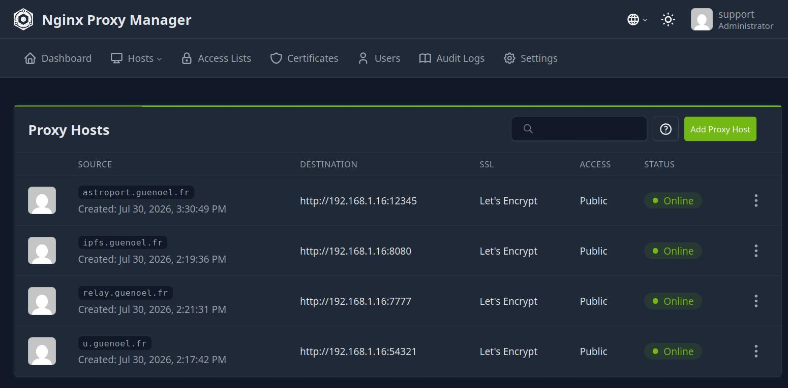
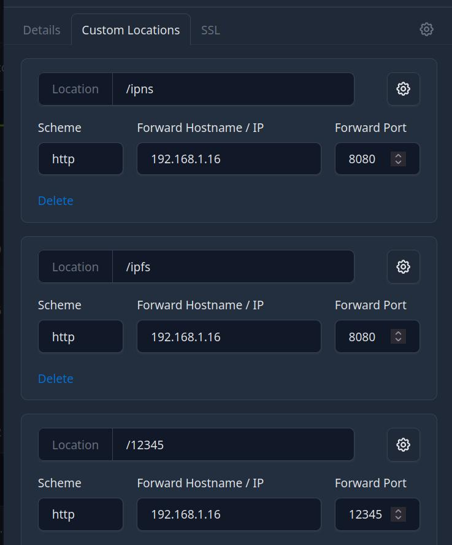

Ouvrir sa CoeurBOX au monde en six étapes : régler la box, brancher Nginx Proxy Manager, installer NextCloud, déclarer sa consommation et sa production d'énergie, puis se voir apparaître en LIVE dans la constellation.
Votre CoeurBOX est la porte d'entrée de vos proches vers un internet qu'ils ne subissent plus. Astroport.ONE fait la jonction entre le Web2 (une adresse email, un lieu sur la carte, un smartphone) et le Web3 (des clefs cryptographiques, IPFS, NOSTR, la monnaie libre Ğ1). Personne n'a besoin d'apprendre la cryptographie : EMAIL + GPS = MULTIPASS.
Le Capitaine accueille des MULTIPASS sur sa station, la maintient en ligne et touche une rétribution en échange. Vous pouvez aussi être simple Armateur (l'hébergeur matériel).
Chaque station apportée se voit attribuer une Participation Aux Frais, négociée avec la constellation, qui rembourse ses frais réels (étape 6).
Votre station affiche sa consommation et sa production d'énergie. En mode LIVE, toute la constellation la voit (étape 7).
Cochez au fur et à mesure : votre avancement est gardé dans ce navigateur. Chaque point renvoie à l'étape qui l'explique.
bash <(curl -sL https://install.astroport.com)A pour astroport, ipfs, relay, u et cloud (ou un joker *).u. Voir l'étape 4 (A à D).cloud.mondomaine Voir l'étape 5.Beaucoup de services tournent sur votre CoeurBOX, mais un seul point d'entrée les protège : Nginx Proxy Manager (NPM). Sur votre box Internet, vous ne redirigez que ce qui mène à NPM, plus le port des pairs IPFS.
| PORT | PROTOCOLE | VERS | POURQUOI | |
|---|---|---|---|---|
| 80 | TCP | CoeurBOX :80 | NPM : redirige vers HTTPS et obtient les certificats Let's Encrypt | OUVRIR |
| 443 | TCP | CoeurBOX :443 | NPM : tout le HTTPS et le WebSocket (relais NOSTR, UPassport…) | OUVRIR |
| 4001 | TCP + UDP | CoeurBOX :4001 | IPFS : les pairs de l'essaim vous trouvent et vous échangent des blocs | OUVRIR |
| 30333 | TCP + UDP | CoeurBOX :30333 | Seulement si vous hébergez un nœud Duniter v2s (blockchain Ğ1) | OPTIONNEL |
81 (administration de NPM), 5001 (API IPFS), 7777, 8080, 12345, 54321 (services, déjà joignables via NPM en HTTPS), 8001/8002/8443 (NextCloud). Le pare-feu firewall.sh de la CoeurBOX les ferme à Internet : ils ne sont accessibles que depuis votre réseau local.
NPM est le standardiste de votre CoeurBOX : un visiteur demande relay.mondomaine, NPM le sert au bon service, en HTTPS. Bonne nouvelle : l'installateur crée déjà ces hôtes pour vous (install/setup/setup_npm.sh). Cette étape sert à vérifier, réparer ou refaire à la main.
Depuis un appareil de votre réseau local : http://IP_DE_LA_COEURBOX:81 (ou http://127.0.0.1:81 sur la CoeurBOX elle-même).
Utilisateur support@qo-op.com. L'installateur a remplacé le mot de passe par défaut par un mot de passe généré, gardé dans un fichier (commande ci-dessous).
Menu Hosts → Proxy Hosts. C'est là que vous voyez la liste des services publiés (capture ci-dessous).
Renseignez votre domaine et l'adresse locale de la CoeurBOX : le tableau se met à jour, avec des boutons pour copier chaque nom et tester que l'hôte répond depuis Internet.
| DOMAIN NAMES | SCHEME | FORWARD HOSTNAME / IP | PORT | WEBSOCKETS | RÔLE |
|---|


/ipns et /ipfs → port 8080 (passerelle IPFS), /12345 → port 12345 (carte de la station). Cet exemple utilise 192.168.1.16 : remplacez par l'IP de votre CoeurBOX.Add Proxy Host. Domain Names = le nom du tableau. Scheme http, Forward Hostname/IP = l'IP de la CoeurBOX, Forward Port = le port du tableau. Cochez Websockets Support là où le tableau l'indique (relais NOSTR et UPassport en ont besoin).
SSL Certificate : Request a new SSL Certificate (Let's Encrypt), puis cochez Force SSL et HTTP/2 Support, acceptez les conditions et indiquez un email. Les ports 80 et 443 doivent déjà être redirigés (étape 3), sinon la demande échoue.
Pour que les stations se synchronisent entre elles, l'hôte ipfs sert aussi /12345/. Dans l'onglet Advanced (Custom Nginx Configuration), collez :
u. (uSPOT API)L'hôte u. sert l'API uSPOT/UPassport (port 54321). On lui ajoute trois chemins personnalisés qui renvoient vers d'autres services de la CoeurBOX : un même nom de domaine donne alors accès à l'API, à la passerelle IPFS et à la carte de la station. L'installateur ne crée pas ces chemins : à ajouter à la main.
Hosts → Proxy Hosts → les trois points de la ligne u. → Edit.
Onglet Custom Locations → Add location, trois fois. Pour chacune : le chemin, Scheme http, l'IP et le port du tableau ci-dessous.
Save. Testez ensuite https://u.mondomaine/12345 dans le navigateur : la carte de votre station doit s'afficher.
| HÔTE | LOCATION | SCHEME | FORWARD HOSTNAME / IP | FORWARD PORT | VERS |
|---|
Pour tout refaire en une commande à partir de ce que l'installateur sait déjà (hôtes et certificats, sans les chemins de u.) :
C'est ce service qui permet à vous-même et à vos amis de sauvegarder et synchroniser leur smartphone — photos, contacts, agenda, documents — à un endroit connu et sûr : votre CoeurBOX, plutôt que chez un géant du numérique. Chaque personne garde ses données, vous gardez la maîtrise du lieu.
Pour vous, votre famille, vos amis : chacun un compte, 128 Go prévus par ZenCard, des sauvegardes de téléphone automatiques.
Les données restent sur un matériel que vous connaissez. Si vous le souhaitez, un disque dédié en BTRFS (/nextcloud-data) apporte compression et instantanés.
NextCloud AIO écoute en interne sur 8001 ; NPM le publie sur cloud.mondomaine en HTTPS. Rien d'autre à ouvrir sur la box.
Ou, si Astroport.ONE est déjà installé, seulement le conteneur :
Ensuite, relancez la configuration de NPM : elle détecte NextCloud et crée l'hôte cloud.mondomaine automatiquement.
| PORT | CE QUE C'EST | ACCÈS |
|---|---|---|
| 8001 | NextCloud lui-même (Apache), publié par NPM | VIA NPM (HTTPS) |
| 8002 | Tableau de bord de NextCloud AIO (mises à jour, sauvegardes) | RÉSEAU LOCAL SEULEMENT |
| 8443 | Assistant de première configuration d'AIO | RÉSEAU LOCAL SEULEMENT |
Dans NextCloud, créez un compte pour la personne (ou laissez-la le faire : son email, c'est son MULTIPASS).
Sur le téléphone, installez l'application Nextcloud, indiquez le serveur https://cloud.mondomaine et connectez-vous.
Dans l'appli, activez le téléversement automatique des photos : le téléphone se synchronise désormais chez vous.
Chaque station apportée par un nouvel Armateur ou Capitaine se voit attribuer une PAF (Participation Aux Frais), négociée avec la constellation. Pour que ce remboursement reste honnête, la station affiche ce qu'elle consomme et ce qu'elle produit.
Mesure la consommation réelle du processeur et de la machine, jour après jour. Publiée dans l'état de la station (energy : kWh du jour, du mois, total, puissance moyenne).
Lit votre régulateur solaire par Bluetooth. Publiée dans l'état de la station (solar : puissance instantanée, énergie du jour, du mois, tension de batterie).
Des ordres de grandeur pour comprendre. La PAF réelle de votre station est négociée avec la constellation.
Base : 1 Ẑen ≈ 1 € en mode ẐEN de production. Un Raspberry Pi tourne autour de quelques watts ; un PC de jeu avec carte graphique monte à plusieurs dizaines de watts en moyenne (exemple chiffré sur la page Nous recrutons).
Votre station publie régulièrement son état de santé, sa PAF, sa consommation et sa production sur le relais NOSTR de la constellation. Interrogez un relais : vous voyez les stations qu'il connaît, en direct. Si vous changez de relais, appuyez sur INTERROGER pour relire la constellation telle que ce relais la voit.
| STATION | SANTÉ | PUISSANCE | PAF (Ẑ) | BILAN (Ẑ) | CONSO. | SOLAIRE |
|---|---|---|---|---|---|---|
| Appuyez sur INTERROGER pour charger les stations du relais. | ||||||
CONSO. : puissance moyenne récente (PowerJoular) et énergie du jour. SOLAIRE : puissance instantanée et énergie du jour (Victron). « — » : la station ne publie pas encore cette mesure. Pour la vue 3D de la constellation, utilisez le bouton LIVE de la page d'accueil.